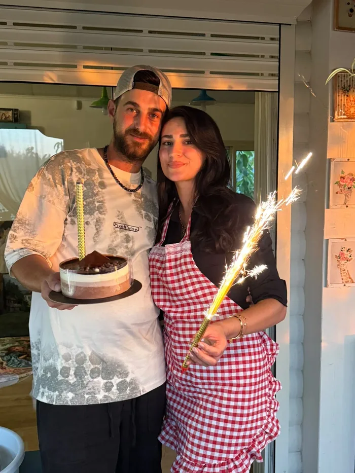
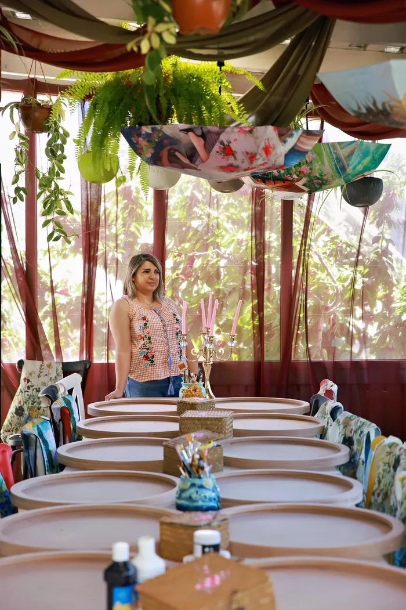
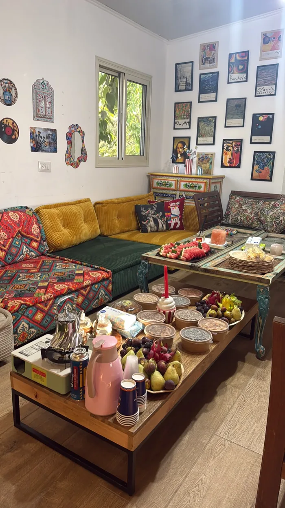
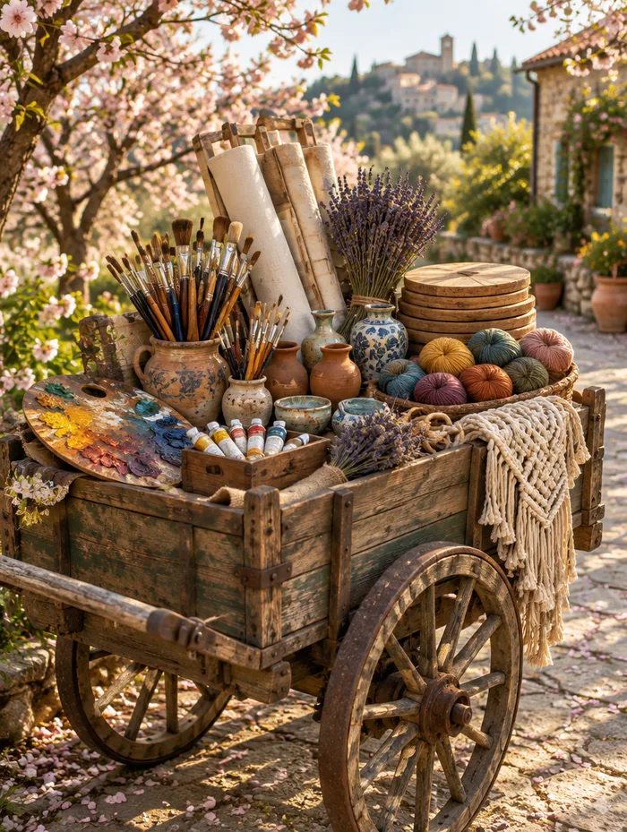

01
סדנאות פרטיות, משפחות וימי הולדת
סדנה רק בשבילכם: למשפחה, לחברים, ליום הולדת, לקבוצה או לצוות מהעבודה.
לתיאום בהודעה
סטודיו לאמנות שבו משאירים את הטלפון בצד, נותנים מקום ליצירתיות, ויוצאים עם יצירה שעשיתם בעצמכם וזיכרון טוב שנשאר איתכם.
ערין עוידאת | מורה ומדריכה לאמנות חזותית
וילונות מקרמה, ארונות עץ ישנים, כן ציור מול החלון, חדר ירוק ופטיו עם כיסאות צהובים בגינה. שולחן עבודה אחד ארוך, וכולם יושבים סביבו.
הרמוני הוא הרבה מעבר לסטודיו לאמנות. זהו בית ליצירה, לחיבור בין אנשים, לתרבות ולחוויה. מקום שבו האמנות פוגשת את הטבע, המסורת והאירוח האותנטי.
״אני מאמינה שכל אדם יכול ליצור, להתחבר לעצמו ולגלות את הכוח שבאמנות. בהרמוני כל מפגש הוא חוויה המשלבת יצירה, אנשים, טבע ואירוח מכל הלב.״
הסטודיו שוכן בלב מטעי הדובדבנים, בין מסעדה למג׳דל שמס, בדרך לברכת רם, מוקף בנוף קסום שמעניק השראה, שלווה וחיבור לטבע.
משפחת הרמוניהצצה לכמה מהסדנאות שלנו. את כל הסדנאות והמחירים תמצאו במחירון המלא למטה.

סדנה רק בשבילכם: למשפחה, לחברים, ליום הולדת, לקבוצה או לצוות מהעבודה.
לתיאום בהודעה
אפשר להזמין מראש חוויה אמנותית שמשלבת סדנה, אוכל אותנטי ומוזיקה חיה.
לתיאום בהודעה
בנוסף לסדנאות בסטודיו, אנו מציעים סדנאות אמנות ניידות ומגיעים עד אליכם – לבתי ספר, מוסדות, ארגונים, מקומות עבודה, אירועים פרטיים ומרחבים קהילתיים. כל סדנה מותאמת אישית לאופי הקבוצה, לגיל המשתתפים ולמקום.
לתיאום בהודעהכתבו לנו בוואטסאפ איזו סדנה מעניינת אתכם, ונתאם יחד מועד.
בלב מטעי הדובדבנים, בין מסעדה למג׳דל שמס, בדרך לברכת רם.